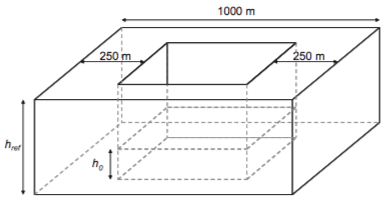
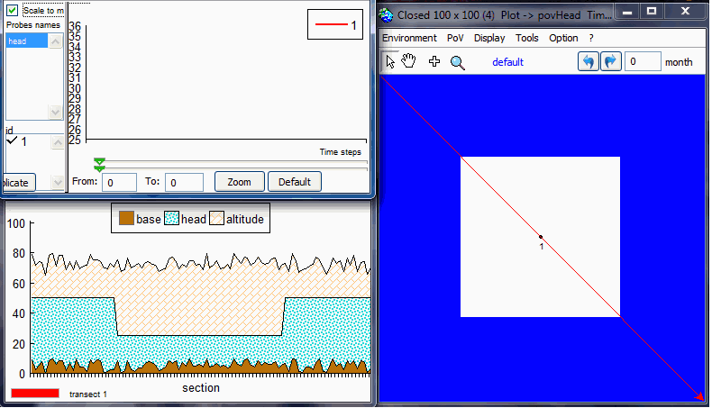
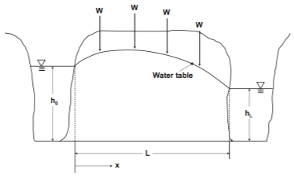
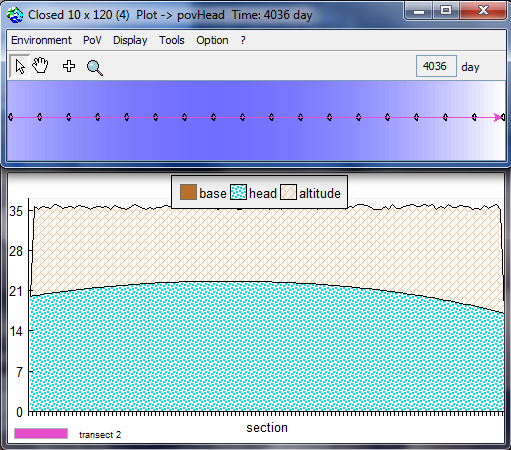
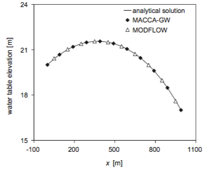
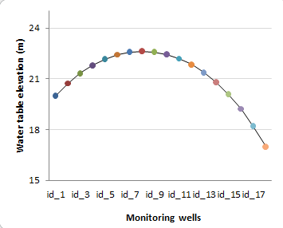
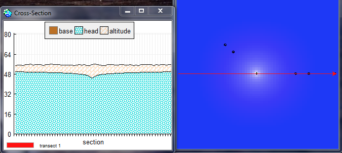
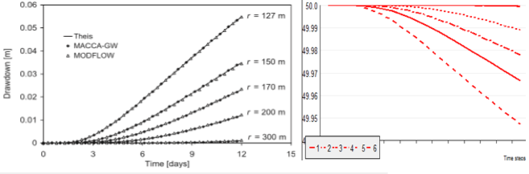
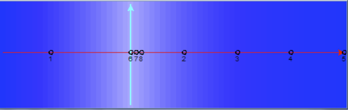
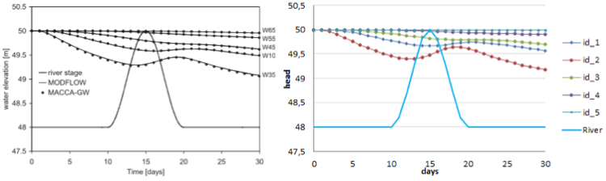

|
Replication of MACCA-GW: the ground water diffusion in an aquiferPierre Bommel, Bruno Bonté, Marie-Paule Bonnet, Grégoire Leclerc.The aim of this model (zipfile, 191Ko) is to simulate water exchange between surface soil, river network and the underlying aquifer. This model is a replication of the model by (Ravazzani et al. 2011) called MACCA-GW (for MACroscopic Cellular Automata for GroundWater). It represents the water flow in unconfined aquifers. The full description of the model is availble on the Demo_Aquifer page. Model description and resultsThe full description of the model is availble on the Demo_Aquifer
page. Test 1: § 5.1 "Stability and convergence test"The purpose is to test the stability and convergence of the aquifer. The aim of this analysis is to verify the method proposed by Ponce et al. (2001) to find the minimum value of time step that satisfies stability and convergence.By default, it sets a 100x100 grid, with head = aHead m, except for the central zone where head = 25m.
  Test 2 : § 5.2 "Steady flow between two streams in response to uniform recharge"To run MACCA-GW, the model domain was set with two Dirichlet
conditions on the west boundary (h0 = 20 m) and the
east boundary (hL =17 m) to represent the stage in the
river. In addition, a Neumann type B condition on north and south
boundaries was considered. Recharge was set to 5.78704 10 9 m/s
equivalent to 0.5 mm/day. The time step was set to 8000 s. Initial
head was set to 17 m on every cell     Test 3 : § 5.3. "Drawdown due to a constant pumping rate from a well"The domain was setup applying Dirichlet condition on the entire
boundary with hydraulic head h = 50 m, as well as initial
condition. A well with a constant pumping rate of 0.001 m3/s was
placed in the central cell. The time step was set to 4000 s.
Monitoring wells were placed along cardinal directions at a
distance of 150, 200, 300 m from the pumping well. Two monitoring
wells were placed on the 45 direction at a distance of 127 and 170
m to investigate the eventuality that von Neumann neighbourhood
could generate privileged directions. A further monitoring well
was positioned at the cell adjacent to the boundary to verify if
boundary condition could have influence on the cone of depression.
12 days duration after the beginning of the pumping.   Test 4 : § 5.4. "Aquifer response to stream-stage variation"The domain was set up applying a constant head h = 50 m on the west and east boundaries, a Neumann type B condition on north and south boundaries, and an initial condition to perform the test. The time step was set to 4000 s. A river was placed with north- south direction at a distance of 250 m from the west boundary. River bottom was set at 46.5 m. Riverbed conductivity = 10-5 m/s , thickness = 0.5 m, and width = 5 m. Monitoring wells were placed at a distance of 100, 350, 450, 550, and 650 m from the west boundary.   Computational performanceDuration of a simulation = 3 years (1095 days or time steps)
For more information, see Ravazzani, G., Rametta, D., & Mancini, M., 2011. Macroscopic cellular automata for groundwater modelling: A first approach. Environmental Modelling & Software, 26(5), 634-643. See paper on line MODFLOW 6: Harbauch A W, 2005.
Modflow-2005, The U.S. Geological Survey Modular Ground-Water
Model, U.S. Geological Survey Techniques and Methods 6-A16
http://water.usgs.gov/nrp/gwsoftware/modflow2005/modflow2005.html
|
|
|